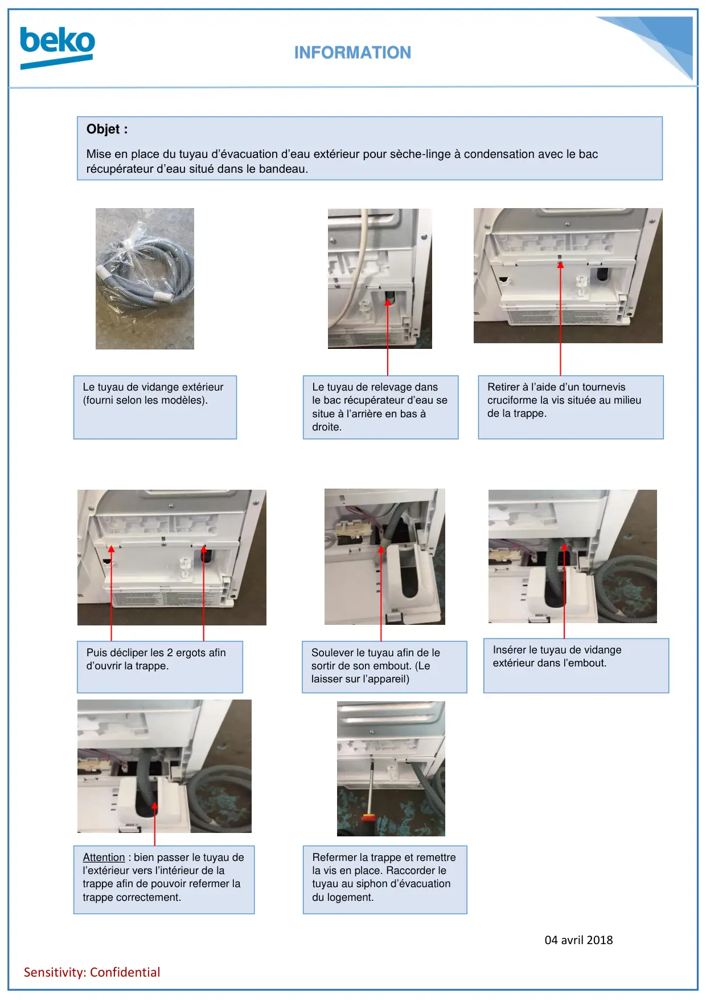

Mise en place tuyau évacuation

INFORMATION04 avril 2018Sensitivity: ConfidentialLe tuyau de vidange extérieur(fourni selon les modèles).Le tuyau de relevage dansle bac récupérateur d’eau sesitue à l’arrière en bas àdroite.Retirer à l’aide d’un tourneviscruciforme la vis située au milieude la trappe.Puis décliper les 2 ergots afind’ouvrir la trappe.Soulever le tuyau afin de lesortir de son embout. (Lelaisser sur l’appareil)Insérer le tuyau de vidangeextérieur dans l’embout.Attention : bien passer le tuyau del’extérieur vers l’intérieur de latrappe afin de pouvoir refermer latrappe correctement.Refermer la trappe et remettrela vis en place. Raccorder letuyau au siphon d’évacuationdu logement.Objet :Mise en place du tuyau d’évacuation d’eau extérieur pour sèche-linge à condensation avec le bacrécupérateur d’eau situé dans le bandeau.
1 / 1